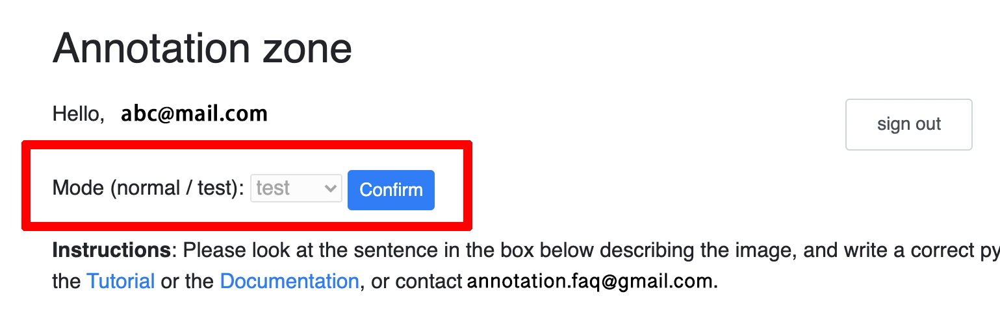
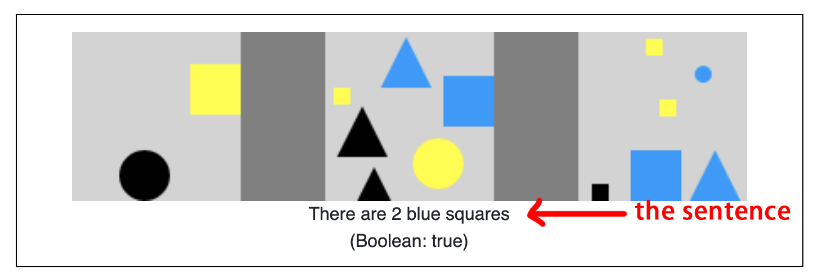

Tutorial
You can choose:
-
the video tutorial
-
or the text tutorial,
that both show an example of annotation, and where to find the tools you need.
Below the text tutorial, there are 4 additional examples of annotation. Please check the examples after reading/watching the tutorial.
Video tutorial
Text tutorial
1: Log in
Please log in using your credentials. If you do not have the credentials, please reach out to aw588@cornell.edu.
Allow a few seconds for page redirection.

|
2: Mode selection
Are you:
-
testing the tool / doing an interview ? Select the test mode (with 5 sentences).
-
working as usual ? Select the normal mode. (Will require appropriate access rights)
|  |
The page after mode selection looks like this:

|
Goal of task
Instructions: Please look at the sentence in the box below describing the image, and write a correct Python expression for this sentence.
In case of doubt, please:
-
first refer to the Tutorial or the Documentation,
-
if you have additional questions,
- post it on the Annotation QA Discord,
- or contact aw588@cornell.edu.
|  |
How to understand this task?
There are 3 elements in this box:
- a sentence
- an image, divided into 3 boxes
- a Boolean
This sentence states: "There are 2 blue squares". For the image above, we effectively observe 2 blue squares (1 in the box in the middle, and 1 in the right box).
Thus, the sentence is true for the image above.
For the image below, the sentence is false.

|
What we need to do, is to translate the sentence into a Python expression, that can evaluate whether the sentence is true or false for a given image.
Below is an example.
3: Write the code
We will write the Python expression, using the functions provided.
You can also use the data structures with corresponding methods, and variables provided.
Attention
Please ONLY use the provided functions and methods. If you think one annotation cannot be done with them, or if there is an issue, please click on "Skip this example", and leave your comment in the pop-up box. You can also note the Image ID(s), and reach out to aw588@cornell.edu.
Attention
Different expressions can be valid and correct for one sentence. Please opt for SHORTER CODE when possible, since it usually aligns better with the language of the sentence.
What to do
For the example above, we want to check if there are 2 blue squares in the image.
One way we can think of it (and it is not the only one) is to check all the items in the image, and filter over them by checking if they are blue AND a square.
Now, let's implement it.
-
We can see that on the page Variables that there is a variable called
all_items. -
On the page Utility functions, section Filters, there is a function
filter_objthat we can use. -
The filtering conditions apply to the color and to the shape of the item. We can find the function
is_bluein the section Color, andis_squarein the section Shape. -
We can now write the filtering part, using a lambda function:
filter_obj(all_items, lambda x: is_blue(x) and is_square(x))
- Finally, we want to check the existence of 2 items satisfying the conditions. In the section General, we can find a function
countthat we may use. So, our final expression can be like:
count(filter_obj(all_items, lambda x: is_blue(x) and is_square(x))) == 2
Note
This is just a solution, not the solution!
Syntax checking
During the writing time, you can click on Check syntax to verify if the syntax of your expression is valid.
If it is, the Output panel will just show the Running time. Otherwise, it will display an error message.
Validation
When you finished your Python expression, please click on the button Validate to validate your result on the visible image, and a few hidden cases.
You should expect your expression to pass all the cases:

|
...Otherwise, please review your code with the help of the details given in the output, and modify your code so that it passes all the test cases.

|
If you think that there is a bug or any other issue (with the data, or else), please click on Skip this example and leave your comment. You can also note the Image ID(s), and reach out to aw588@cornell.edu.
What to avoid
Sometimes you might be able to pass all the cases using a wrong expression, however it does not correspond to the sentence. These issues can be more or less visible (some may be due to reasoning), please verify your expression as much as possible, so that it correctly expresses the sentence.
4: Submission
Before submitting
At the bottom of the page, you can find 2 sections:
-
Confidence score: Please assign a confidence score to the code you wrote. To which extent this code is faithfully "translating" the sentence in a clear and simple way? For instance, if you are not confident about the reasoning, you may want to choose a lower score for this case.
-
Comment: If you have any comment or thought about this case, please leave your comment in the text box "Comment".
After filling out these sections, you can Submit. (You cannot if all the cases have not been validated previously!)
(If applicable): Skip an example
If you think the annotation cannot be done with the provided materials (functions, data structures, variables), or if there is an issue about the case you are working on, please:
-
click on Skip this example,
-
leave your comment: specifically, why you want to skip this case? What issue did you encounter?
You can also note the Image ID and reach out to aw588@cornell.edu.

|
Examples
Below are a few examples of annotation with (just) some possible answer.
Ex 1
Sentence: There is 1 box with 2 items

|
Python expression:
exist(filter_obj(all_boxes, lambda x: count(x.all_items_in_box()) == 2))
Ex 2
Sentence: There is 1 box with 5 yellow items

|
Python expression:
exist(filter_obj(all_boxes, lambda x: count(filter_color(x.all_items_in_box(), Color.YELLOW)) == 5))
This expression is also valid (but slightly longer):
count(filter_obj(all_boxes, lambda x: count(filter_color(x.all_items_in_box(), Color.YELLOW)) == 5)) == 1
Ex 3
Sentence: There is a small black triangle touching the wall.
Python expression:
exist(filter_obj(all_items, lambda x: is_small(x) and is_black(x) and is_triangle(x) and is_touching_wall(x)))
Ex 4
Sentence: There is a box with all 3 different colors and only 1 blue item.

|
Python expression:
exist(filter_obj(all_boxes, lambda x: Any(x.all_items_in_box(), is_black) and Any(x.all_items_in_box(), is_blue) and Any(x.all_items_in_box(), is_yellow) and count(filter_color(x.all_items_in_box(), Color.BLUE)) == 1))
Ex 5
Sentence: The first two blocks from the base of a tower are black.

|
Python expression:
exist(filter_obj(all_items, lambda x: AND(is_black(x), is_bottom(x)) and AND(exist(get_above(x)), is_black(unique(get_above(x))))))
Ex 6
Sentence: There is a yellow block as the top of a tower with exactly three blocks.

|
Python expression:
exist(filter_obj(all_items, lambda x: is_yellow(x) and is_top(x) and x.box.is_tower() and count(x.box.all_items_in_box()) == 3))